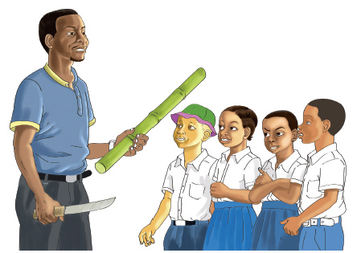

25.
Jakobo alinunua kuku wawili.
Mmoja alikuwa na uzani wa ya kilogramu na mwingine ya kilogramu.
Tafuta jumla ya uzani wa kuku hao.
26.
Moja ya sita ya pipa lilijazwa maji.
Je, ni sehemu gani ya pipa haikujazwa maji?
27.
John alikata nanasi katika vipande 20 vinavyolingana.
Iwapo ya nanasi hilo iliuzwa, ni sehemu gani ya nanasi haikuuzwa?
28.
Wanafunzi wa darasa la tatu katika shule fulani wana mabegi ya bluu na meusi.
Ikiwa ya wanafunzi wana mabegi ya bluu, je ni sehemu gani ya wanafunzi wa darasa hilo wana mabegi meusi?
29.
Mwalimu anataka kuwagawia wanafunzi wanne muwa wenye pingili nne zilizo sawa.
Je, kila mwanafunzi atapata sehemu gani ya muwa huo?
